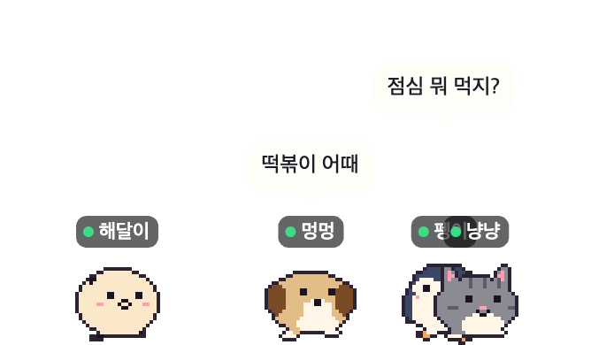
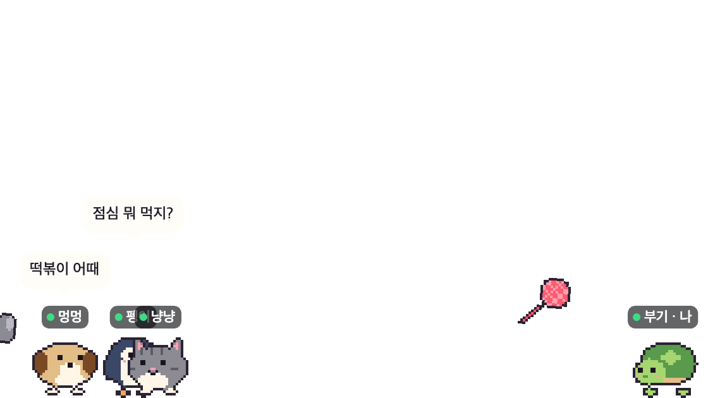
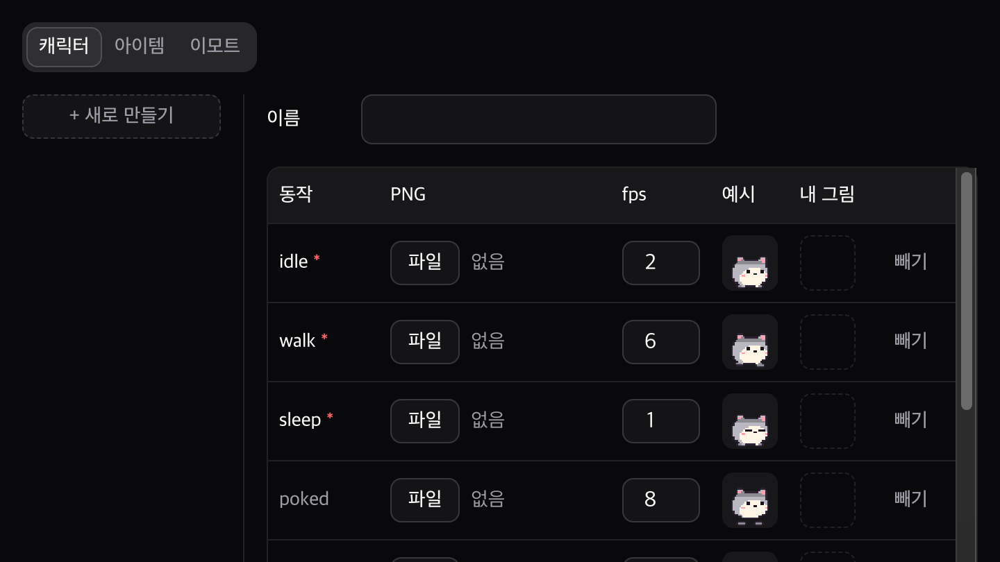
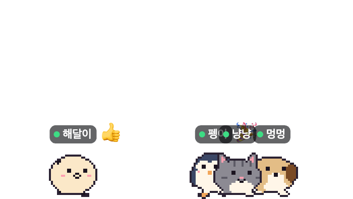

말풍선으로 대화
단축키로 입력창을 열어 쓰면 내 캐릭터 머리 위에 말풍선이 떠요.
친구 캐릭터가 화면 아래를 걸어 다니는 메신저예요. 초대코드를 아는 친구끼리만 써요.

단축키로 입력창을 열어 쓰면 내 캐릭터 머리 위에 말풍선이 떠요.

친구 캐릭터를 누르면 도토리가 날아가요. 먹이를 주거나 집어 던질 수도 있어요.

동작별 PNG 를 올리면 친구 화면에도 바로 보여요. 아이템과 효과음도 만들 수 있어요.

GIF 를 올리면 픽셀 이모트로 바꿔 줘요. 단축키로 바로 띄워요.
받은 설치 파일을 열어요.
처음 한 번 실행을 허용해요. Mac 은 시스템 설정, 개인정보 보호 및 보안에서 "그래도 열기". Windows 는 "추가 정보"를 누르고 "실행".
이메일로 가입해요.
친구에게 받은 초대코드를 넣어요. 처음이면 "새로 시작".
메시지 단축키는 트레이 메뉴에서 바꿀 수 있어요.